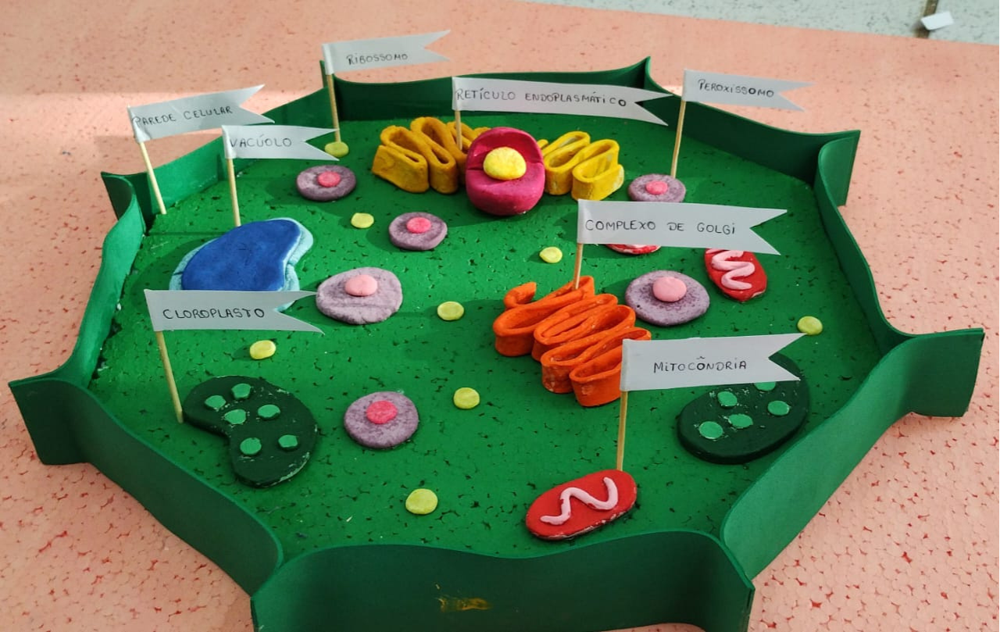

Nutrição em células vegetais
-
Autotrofia: as células vegetais são autotróficas, ou seja, são capazes de produzir seu próprio alimento. Elas utilizam a energia solar, a água e o dióxido de carbono para sintetizar glicose (um tipo de açúcar) através da fotossíntese.
-
Fotossíntese: a fotossíntese ocorre nos cloroplastos, organelas presentes nas células vegetais, e é o processo fundamental para a produção de alimento pelas plantas.
-
Nutrientes minerais: além da fotossíntese, as células vegetais absorvem nutrientes minerais do solo através das raízes, como nitrogênio, fósforo e potássio, que são essenciais para o crescimento e desenvolvimento.
Video 3: Nutrição vegetal
Figura 3: Célula vegetal
